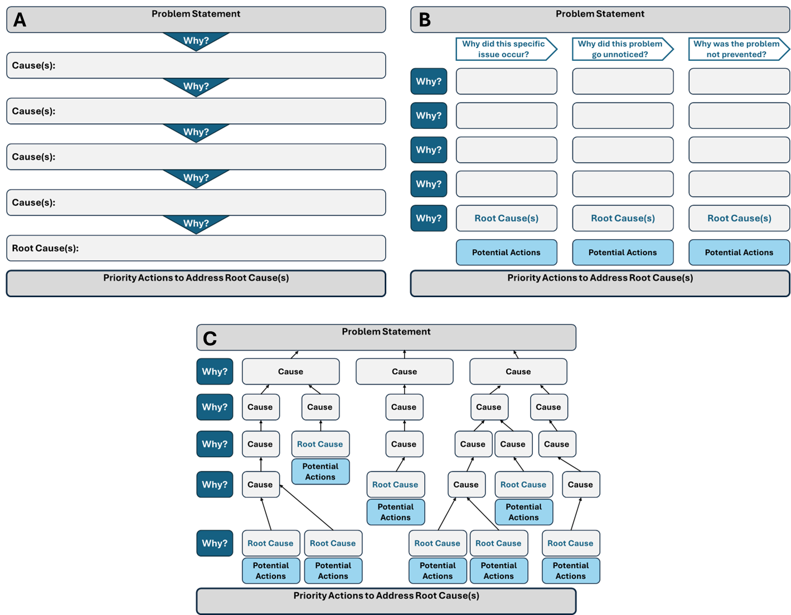
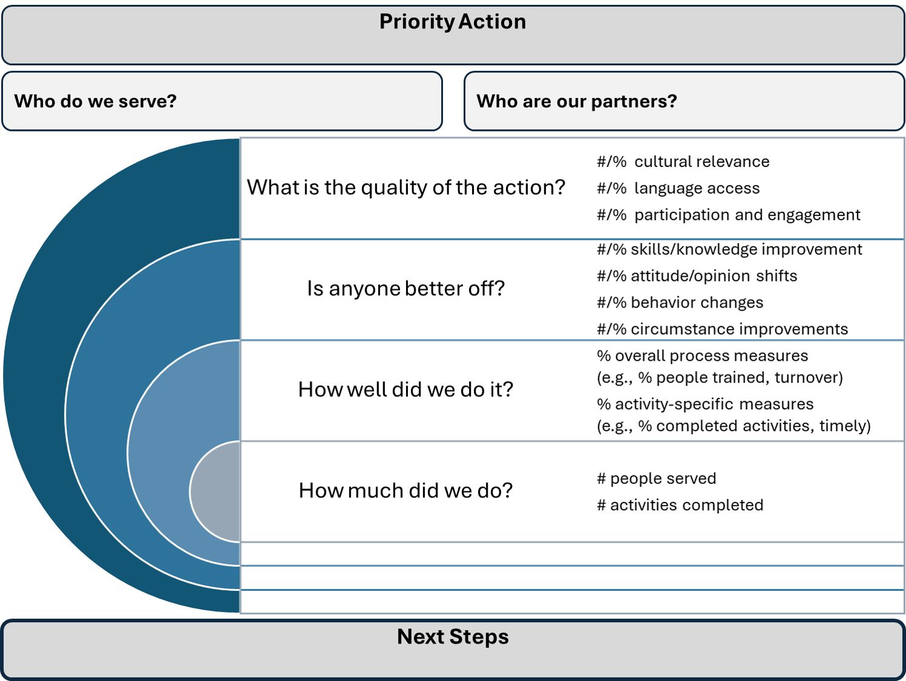

Evaluation
After a project is complete (or has gone through a complete iteration) - it’s important to assess the project and evaluate the extent to which it has achieved the goals you set for it and advanced and improved equity outcomes. There are several ways to achieve this. Below is a list of methods one might consider utilizing for this phase of the data life cycle.
Depending on what you discover during the evaluation process, you may need to undergo a second phase or iteration of the project to integrate lessons and get closer to achieving the original goals and desired equity outcomes.
While the processes below include numerical steps - that does not mean steps must be completed in that order, or that steps must be completed all at once. Moreover, teams don’t need to wait until the project is complete to benefit from using these tools! It may be helpful to use some or all of these tools during the Plan & Prepare phase, and then revisit and iterate some or all components at multiple points during your project or process.
When in doubt - make time to use these tools early and often!
Root Cause Analysis
Root cause analysis is a technique that helps identify the fundamental reasons, or root causes, of a problem or unwanted outcome. Once the root causes are identified, actions can be taken to address those causes and minimize or eliminate their impact on outcomes. Identifying the root cause(s) is the most effective way to prevent future problems and ultimately remedy existing ones.
Considerations
It can be tempting to jump straight into the Root Cause Analysis process. Before you do, it’s important to think through the below considerations and prepare accordingly.
Put a team together
Root Cause Analysis should not be completed in a silo. At the very least, the team should include individuals within our organization that are interested in working on and correcting the problem at hand. At best, the team would include partners from communities that are impacted by the problem at hand. Inclusion of external partners enables us to give voice to important perspectives and the lived experiences of those who have been and/or are currently being impacted by the problem. When the team does not include such critical perspectives, there is a tendency to rush to propose solutions that address symptoms of the problem, rather than the actual root causes of the issue.
Remember that effectively partnering with communities requires making a commitment that extends beyond soliciting feedback in focus groups and surveys. A sustained, long-term, reciprocal relationship must be built on trust and open, honest communication where power is shared. Taking the time to strengthen those relationships will not only benefit the organization but also the outcomes of the communities served.
Quote adapted from Advancing Health Equity’s Root Cause Analysis Page
See Step 3 of the Planning Phase for more guidance.
Allocate time to the process
It takes time to truly and deeply interrogate the “whys” and data associated with the problem at hand. Depending on the complexity of the problem, the team should plan to meet over the course of a few weeks to a few months to complete the process.
Don’t avoid hard truths
If you’ve made it this far into your process, it probably means that you are truly interested and invested in operationalizing and advancing equity into your data-intensive work. Part of that process is acknowledging hard truths and sitting with discomfort. Team members may share perspectives, experiences, or identify root causes during the process that bring up uncomfortable or unfamiliar feelings. While experiencing those feelings is normal, it’s important to remember to honor hard truths, and prioritize the process over your comfort.
Integrity is choosing courage over comfort
It’s choosing what’s right over what’s fun, fast, or easy
And it’s practicing your values, not just professing them
— Brené Brown, Dare to Lead
When it comes to the Root Cause Analysis process specifically, it’s important to be aware of and push back on views that reinforce individual responsibility over the role of systemic, structural, and institutional racism.
Process
Identify the problem
Built a team that includes people who are impacted by the problem
Schedule time over the course of a few weeks to a few months to complete the process. How you use this time is up to you. Using meetings to iterate on the brainstorming and feedback processes so you can:
- Dig deep into the issue by working with team members to compile or analyze data to help you understand the issue
- identify the true root causes of the issue
- Identify potential actions to address the root causes
- Prioritize actions that the team can take to address the problem and improve equity outcomes.
Interrogate the problem and associated data with an equity lens by asking “why” at least 5 times.
Prioritize actions you/your team can take to address the root cause(s) of the problem. You will likely find root causes and potential actions that are outside of your control. Be sure to prioritize actions that you can actually address and be realistic about the time and resources needed to fully address them.
Step 4 above is the core of the process and can be completed using many different methodologies or approaches. Below are a few simple graphical templates you can use to get started!

Results-Based Accountability (RBA)
Results-Based Accountability (RBA)1 is a tool to support a disciplined way of thinking and taking action that can be used to improve the performance of programs or projects and their associated outcomes.
The RBA process involves two parts, each asking a set of seven questions, and starts with the desired results (outcomes, impact) and works backward towards the means (solutions, strategies, actions) to ensure that plans work toward community-centered results and implementation. The RBA process also helps to distinguish between population level (whole groups) indicators, that are the responsibility of multiple systems and take a long time to shift, and performance measures (activity-specific) that teams can use to determine whether what they do is having an impact.
Considerations
RBA includes conducting Root Cause Analysis
In step 4 below, teams will use Root Cause Analysis to understand the “whys” behind the trends they see in the data related to their work. As such, it will be critical to remember the considerations in the Root Cause Analysis section and apply them to Step 4 (and all other steps) of the RBA Process as well: Put a team together, Allocate time to the process, Don’t avoid hard truths.
Impact requires community at the center of all work
To truly achieve the impact we require with our racial equity goals, it is essential that the work be community based and participatory. The process requires taking time to develop relationship, trust, and true partnership with the communities that are most impacted by our work so that solutions to the problem at hand are co-created with and groundtruthed by those who will ultimately benefit or be burdened by the intended and unintended impacts of the decisions.
For more information, see the Put a team together consideration under the Root Cause Analysis section above, and the below Living Cities RBA Video on the importance of community participatory practice.
In the video, Theo Miller (Executive Director of Hope SF) notes that a truly rigorous, data-driven, and equity centered RBA process requires:
- integrating community in the data process
- acknowledging of the power dynamics of data
- transparency of data and results throughout the process (see the Publish and Share section for guidance on how to make data and products transparent, open, and accessible)
Anti-racist RBA work requires culture change
Culture is a set of living relationships working towards a shared goal. It’s not something you are, it’s something you do.
— Daniel Coyle, The Culture Code
Our organization’s culture lives at the intersection of our values and behavior. Our decisions reflect what we value (i.e., racial equity) and how we behave (i.e., our actions). Shifting our institutional cultures to be more data driven, equitable, inclusive, and kind takes time and can be uncomfortable.
As noted in the Beginners Guide to Anti-Racist RBA:
Anti-racist RBA requires that you look inward and understand how your own power, privilege, biases, world view and identity impacts everything that you do, and then having done that personal work use your power, understanding of history, awareness of your blind spots, and ability to identify and interrupt instances of racism to make more equitable decisions in your role. These are the behaviors that lead to systems change.
In the below Living Cities RBA Video, Robin Brule (The Integration Initiative Director) details the journey and tensions she and her team at City Alive underwent and are continuously work through as they implement the RBA framework:
Part 1: Action Identification
When embarking on the journey to operationalize equity into our organizations and our work, it can be overwhelming and difficult to know where to start. The first part of the RBA process provides a framework for determining what actions we can take first to begin to achieve our racial equity goals.
What are the desired results? These statements should (1) reflect the equity outcomes you want to see in the whole population (i.e., communities, cities, states), and (2) positive conditions (e.g., “healthy” vs. “not sick”). If you’re stuck, try filling in the following statement: “We want communities that are [ insert positive condition that reflects an equity outcome ]”
What would the results look like? These statements should be (1) culturally relevant, contextualized, and connected to the vision the team has with respect to equity outcomes you want to see in the whole population, and (2) specific to the community of interest, not just any community. If you’re stuck, think about what experiencing the outcome/result/condition of wellbeing would look like for that community? What would it feel like? How would people be better off?
What are the community indicators that would measure the desired results? These indicators should be population-level, large-scale measures. Because of the scope and scale of the indicators, population level data often comes from government or agencies (i.e., federal, state, city, or county; e.g. source Census data). These indicators will likely reflect generations of systemic inequities that cannot be changed quickly. However, the small number of indicators that are selected can be used to focus and concentrate the team’s efforts, and to hold the team’s efforts accountable to population-level systems change over time.
What do the data tell us? This step requires two parts. First, look at the data trends for each indicator using whatever demographic breakdowns that are relevant to your work (e.g. aggregated and/or disaggregated by race/ethnicity; see the Consider how you group the data for guidance). Then, conduct a Root Cause Analysis to understand the “whys” behind the data trends. Conducting a thorough root cause analysis is critical to help move teams past superficial understandings of racial inequity (e.g. symptoms) and to the underlying (root) causes of inequity.
Who are our partners? Who should the team work with to ensure we reach our equity goals and have an impact on the community? You may have identified some of your potential partners during the Planning phase; now is another good time to take another look at the list and ask yourself:
Who is missing from our partner list? Have we considered groups that we haven’t worked with (or even have avoided) in the past that could give critical perspective and insight to maximize our impact?
For each partner on the list: Why are they important? What do we need them for? How do we think they can contribute to the process and help us advance outcomes? Note that your response to this last question might differ from how the group would respond for themselves.
Note that engaging with each partner on your list is a completely different step that requires time to build relationships and trust. For some partners on the list, that engagement might happen concurrently as you are completing this process. For others, it might come later.
What works to change the data trend towards racial equity? What specific actions can be taken to address root causes and ultimately decrease racial disparities. During this step, the group should brainstorm a large number of actions, ideally in a judgement free zone. If you’re stuck, try thinking of ideas that fall under the following categories: Low-cost / no-cost ideas; ideas from community, traditional or indigenous knowledge; promising practices; evidence-based practices; creative out-of-the-box or “imagine if” ideas. More is more in this step get all ideas out there without worrying about costs, practicality, implementation, etc.
TipOrganize your thoughts post-brainstorm!Once you’ve completed the generative brainstorming process, you will likely (hopefully!) have a large number of ideas. Take some time to review ideas and group like ideas together. This will help identify similar ideas stated in different ways and will make it easier gather your thoughts when you begin the prioritization process in the next step.
What actions should we start with? For each action (or group of similar action ideas), answer the questions associated with each criteria category to help determine which actions will be prioritized during implementation:
Values: Is the action strengths-based, people-centered, culturally relevant, and anti-racist? Does it advance our racial equity goals?
Leverage: How likely is the action to change the trend line towards equity? What additional resources for change does it activate?
Reach: Is the action feasible given our current resources? Will completing this action actually benefit communities experiencing inequities?
Specificity: Does the action have a timeline with deliverables that answer the questions who, what, when, where, and how?
ImportantFeasibility does not equal business as usualNote that we might need to adjust and re-prioritize our workloads (i.e., how we spend our time) and resources (i.e., how we spend our money) to make an action truly feasible. If this is necessary but it also makes completing the action feasible, it should be considered a feasible action!
This process and way of thinking disrupt historical patterns of “doing (or not doing) what we’ve always done because we’ve always done it that way.” That way of work, regardless of our good intentions, does not produce the racial equity we demand in our communities - and ultimately perpetuates inequitable outcomes.
If we are truly interested and invested in advancing and operationalizing equity into our work, we need to seriously consider making different choices. This is an opportunity to walk the talk of equity - to put our time, money, and resources where our proverbial mouths are - to go from performative words about the importance of equity to making the difficult decisions and taking the time and resources needed to actually practice and operationalize equity.
Part 2: Performance Accountability
In this phase of the RBA process, teams will develop performance measures to ensure the implementation of each action will:
- work to decrease racial disparities
- help hold teams accountable to their commitments
- give teams an understanding of how well implementation went and whether anyone is better off
For each of the priority actions identified in Part 1, teams will need to answer the following questions:
Who do you serve? Identifying who you serve (whether an institution, people, a group, or a system) helps you gain clarity about the intended impact of your work and not attempt to make people accountable for change outside their scope of work.
What is the action’s intended impact? Answering this question will generate the action’s performance measures and will mean the difference between doing business as usual, which has produced racially inequitable results for generations, and being accountable for the impact of our work.
First, teams will answer the following questions to understand the intended impact of the action. Review how teams responded to “What would the results look like?” during Part 1 of the RBA process and refine the vision captured in those responses to make them specific to the action.
- What is the intended impact?
- How would we know if the action worked?
- How would we know if anyone is better off as a result of this action?
Then, while keeping the broader intentions of the action in mind, teams will answer the following questions to develop performance measures that can be used to quantify the impact of the action.
- How much did you do? (Quantity; e.g., number of clients and/or activities)
- How well did you do it? (Quality; e.g., percentage of activity that was of high quality, percentage of common measures of appropriate/high quality)
- Is anyone better off? (Impact; e.g., number or percentage change in skills/knowledge, attitude/opinion, behavior, or circumstance)
What is the quality of the action? The purpose of this group of metrics it to ensure the action is being done well. Consider metrics that can measure cultural relevance, language access, and participation rates to more technical measures of staff training and staff-to-client ratios. If the “better off” measures show no change, quality measures sometimes tell us why we are not having an impact. Alternately, just because the action is being implemented in a high-quality manner, does not mean that the “better off” data will move in the right direction.
What is the story behind the data? It is critical to review the data at the performance level, ask why, and get to root causes - many might be the same as the community level, but it’s critical to take time to regularly review, confirm and adjust as needed. Review how teams responded to “What do the data tell us?” during Part 1 of the RBA process to refresh on root causes at the population level, and then refine understanding (as needed) to make them applicable and specific to the action. Completing this step makes the difference between perpetuating systemic failures to address racially disproportionate outcomes and disrupting them to operationalize equity and justice.
Who are the partners with a role to play? Identify which partners would be the most effective and impactful to support completing this action. Review how teams responded to “Who are our partners?” during Part 1 of the RBA process and consider who is needed and in what role to move the work of this specific action forward. When teams fail to think about the partners that would make their work more effective, it results in the continuation of business as usual, and prevents them from having the thought partners at the table that would allow them to take their work from good to transformative.
What works to have greater impact? As teams implement the action, take time periodically to reflect, especially when things are not going well, as planned, or the data coming in does not show the expected impact. Remember that you have already identified root cases at the population level (Part 1, What do the data tell us?) and the performance level (Part 2, What is the story behind the data?), and know that it takes time to see transformative and cultural change. If sufficient time has passed, consider how to use lessons learned, agency, partner, and community experience, and data to inform how to adapt the action to have a greater impact.
What are the next steps? A commitment to action, just like in the population level process, is critical. This is where we turn our words into actions. Teams answer the questions below with as much precision and specificity as possible.
- Who will do what, by when?
- What resources are needed to get it done?
- Is this a long-term action that needs time or can it be done tomorrow?
- What is the active role of community leadership in making these decisions?
TipDocument commitments to support collective accountabilityWhite answers to the above questions down and get confirmation from all parties to ensure everyone is on the same page with respect to agreed upon commitments.
Data will be required to evaluate the performance measures the team developed. Integrate those performance measures, data needs, commitments, and timelines into the Data & Product Evaluation section of the project’s Data Management Plan!
Below is a graphical illustration of the main RBA Part 2 process components.

Other Racial Equity Lens Evaluation Questions
The questions below can helps us integrate an explicit focus on racial equity as we develop, review, and revise our projects. Some of the questions below are similar to the questions posed in the Root Cause Analysis and RBA sections, as well as in the Planning Phase. The main difference is that Root Cause Analysis, RBA, and planning phases can involve formal longer-term processes whereas the questions below are more flexible and can be applied as needed during any phase of a project.
What’s the policy, program, practice, or budget decision under consideration? What are the desired results and outcomes?
What’s the data and what does it tell us?
How have communities been engaged? Are there opportunities to expand engagement?
Who will benefit from or be burdened by the proposal or program, etc.?
What are the strategies for advancing racial equity or mitigating unintended consequences?
What is the plan for implementation?
How will you ensure accountability, communicate, and evaluation results?
It’s really important for us to remember that when racial equity is left off the table entirely, added to a process haphazardly, or not considered until the last minute, using the above racial equity processes is less likely to be fruitful, and for the communities we’re trying to serve – regardless of our good intentions – it can feel more like a box checking performance rather than an earnest effort to advance equity.
Starting these processes early in the project life cycle, revisiting them often, and in partnership with communities, can help us build relationships and trust, and speaks to the need for our teams, organizations, and systems to operationalize equity with urgency and care.
Additional Resources
- Advancing Health Equity Root Cause Analyses Guide
- American Society for Quality Root Cause Analysis Guide
- Root Cause Analysis Templates for PowerPoint & Google Slides
- Examples related to identifying root causes of health inequities
- GARE guide that connects a racial equity lens to the RBA methodology
- A beginners guide to anti-racist Results Based Accountability (RBA)
Footnotes
The bulk of content in the Results Based Accountability (RBA) section has been informed by: The Government Alliance on Race and Equity (GARE) guide to applying an equity lens to the RBA methodology↩︎